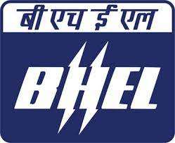

BHEL
BHEL
Approved

For the past 14 years, Sunline Welding Electrodes is devoted to the development of quality welding consumables.Our production team is highly skilled and we always aim to give zero defect products to our customers. Our quality assurance team always believes in continuous improvement in our products keeping in view customer's requirement.
Visit Us To Know MoreWelcome to ASA Industry, a pioneering manufacturing company in Tiruchirapalli, Tamil Nadu. Since our
establishment in 1996 by
Mr. S. Thirugnanasambandam
we have been at the forefront of producing top-quality welding electrodes, cutting rods, and cut
wire products. With a legacy of excellence and a vision for innovation,
ASA Industry has become
a trusted name in the industry
Under the leadership of our current CEO, Mr. J. Jaganathan, and Managing Director, Mr. J.
Saravana Perumal, ASA Industry has continued to thrive and expand. Their combined expertise and
commitment to excellence have propelled the company to new heights, ensuring its continued success
in delivering exceptional products and services.
At ASA Industry, we understand the critical role that welding electrodes, cutting rods, and cut wire
play in various industries. That's why we prioritize precision, reliability, and durability in our
manufacturing processes. Our welding electrodes are designed to provide stable arc characteristics,
ensuring optimal weld quality and strength.
The cutting rods we offer are engineered for clean and precise cuts, boosting productivity and
minimizing material waste. Additionally, our cut wire products are manufactured to precise
specifications, delivering consistent results in diverse applications.
As a company deeply rooted in Tamil Nadu, we are committed to contributing to the growth and
development of the local community. We adhere to stringent quality control measures and
environmentally responsible practices throughout our manufacturing process, reflecting our
dedication to sustainability.
We invite you to explore our website and discover the extensive range of welding electrodes,
cutting rods, and cut wire products we offer. Experience the reliability, precision, and
performance that ASA Industry brings to your welding and cutting operations. Partner with us for
all your welding needs and let us be your trusted source for top-quality products.
Our production team is highly skilled and we always aim to give zero defect products to our customers
Our range of products include E7018-1 Welding Electrodes and E7018 Welding Electrodes.
Leading Manufacturer of E6013 Welding Electrodes and E6013 SS Welding Electrodes from Srirangam.
Offering you a complete choice of products which include Cutting Electrodes / Gouging Rods.
We are a leading Manufacturer of Hardfacing Electrodes LH550 from Srirangam, India.
Manufacturer of a wide range of products which include E8018 B2 Welding Electrodes.
Savanthilingapuram village , Musiri TK , Trichy-621202
Monday to Sunday ,10Am to 6Pm
Email us Your Query